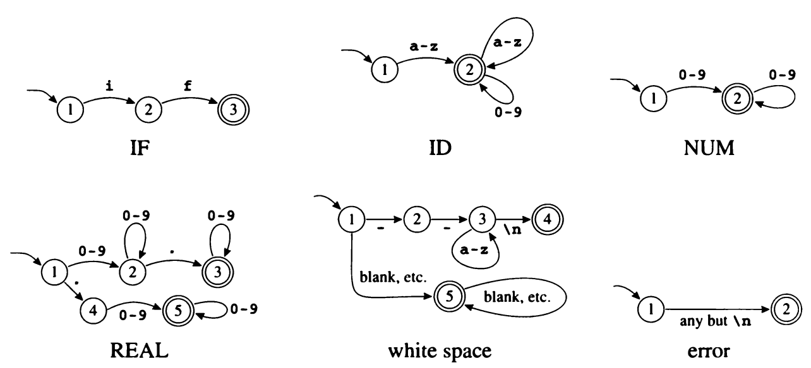
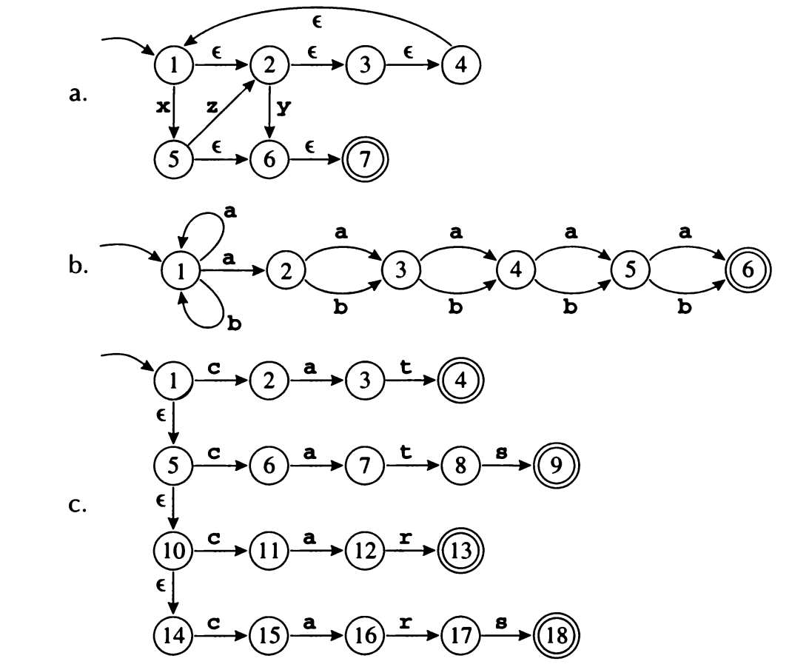

第一部分 编译基本原理
前言
近十余年来，编译器的构建方法出现了一些新的变化。一些新的程序设计语言得到应用，例如，具有动态方法的面向对象语言、具有嵌套作用域和一等函数闭包（first-class function closure）的函数式语言等。这些语言中有许多都需要垃圾收集技术的支持。另一方面，新的计算机都有较大的寄存器集合，且存储器访问成为了影响性能的主要因素。这类机器在具有指令调度能力并能对指令和数据高速缓存（cache）进行局部性优化的编译器辅助下，常常能运行得更快。
本书可作为一到两个学期编译课程的教材。学生将看到编译器不同部分中隐含的理论，学习到将这些理论付诸实现时使用的程序设计技术和以模块化方式实现该编译器时使用的接口。为了清晰具体地给出这些接口和程序设计的例子，我使用ML语言来编写它们。本（序列）书还有使用C和Java语言的另外两种版本。
实现项目。我在书中概述了一个“学生项目编译器”，它相当简单，而且其安排方式也便于说明现在常用的一些重要技术。这些技术包括避免语法和语义相互纠缠的抽象语法树，独立于寄存器分配的指令选择，能使编译器前期阶段有更多灵活性的复写传播，以及防止从属于特定目标机的方法。与其他许多教材中的“学生编译器”不同，本书中采用的编译器有一个简单而完整的后端，它允许在指令选择之后进行寄存器分配。
本书第一部分中，每一章都有一个与编译器的某个模块对应的程序设计习题。在http://www.cs.princeton.edu/~appel/modern/ml中可找到对这些习题有帮助的一些软件。
习题。每一章都有一些书面习题：标有一个星号的习题有点挑战性，标有两个星号的习题较难但仍可解决，偶尔出现的标有三个星号的习题是一些尚未找到解决方法的问题。
授课顺序。下图展示了各章相互之间的依赖关系。

- 一学期的课程可包含第一部分的所有章节（第1~12章），同时让学生实现项目编译器（多半按项目组的方式进行）。另外，授课内容中还可以包含从第二部分中选择的一些主题。
- 高级课程或研究生课程可包含第二部分的内容，以及另外一些来自其他文献的主题。第二部分中有许多章节和第一部分无关，因此，对于那些在初始课程中使用不同教材的学生而言，仍然可以给他们讲授高级课程。
- 若按两个半个学期来安排教学，则前半学期可包含第1~8章，后半学期包括第9~12章和第二部分的某些章。
致谢。对于本书，许多人给我提出了富有建设性的意见，或在其他方面给我提供了帮助。我要感谢这些人，他们是Leonor Abraido-Fandino，Scott Ananian，Stephen Bailey，Maia Ginsburg，Max Hailperin，David Hanson，Jeffrey Hsu，David MacQueen，Torben Mogensen，Doug Morgan，Robert Netzer，Elma Lee Noah，Mikael Petterson，Todd Proebsting，Anne Rogers，Barbara Ryder，Amr Sabry，Mooly Sagiv，Zhong Shao，Mary Lou Soffa，Andrew Tolmach，Kwangkeun Yi和Kenneth Zadeck。
1. 绪论
编译器（compiler）：原指一种将各个子程序装配组合到一起的程序[连接-装配器]。当1954年出现了（确切地说是误用了）复合术语“代数编译器”（algebraic compiler）之后，这个术语的意思变成了现在的含义。
——Bauer和Eickel[1975]
本书讲述将程序设计语言转换成可执行代码时使用的技术、数据结构和算法。现代编译器常常由多个阶段组成，每一阶段处理不同的抽象“语言”。本书的章节按照编译器的结构来组织，每一章循序渐进地论及编译器的一个阶段。
为了阐明编译真实的程序设计语言时遇到的问题，本书以Tiger语言为例来说明如何编译一种语言。Tiger语言是一种类Algol的语言，它有嵌套的作用域和在堆中分配存储空间的记录，虽简单却并不平凡。每一章的程序设计练习都要求实现相应的编译阶段；如果学生实现了本书第一部分讲述的所有阶段，便能够得到一个可以运行的编译器。将Tiger修改成函数式的或面向对象的（或同时满足两者的）语言并不难，第二部分中的习题说明了如何进行这种修改。第二部分的其他章节讨论了有关程序优化的高级技术。附录描述了Tiger语言。
编译器各模块之间的接口几乎和模块内部的算法同等重要。为了具体描述这些接口，较好的做法是用真正的程序设计语言来编写它们，本书使用的是ML语言——一种严格的，具有模块系统的，静态类型的函数式编程语言。ML语言适合用来编写很多类型的应用程序。但如果使用ML语言来实现编译器，似乎能最大限度的利用ML语言中的一些强大特性，同时无需使用ML语言的一些缺陷特性。使用ML语言来实现一个编译器，是一个很愉快的过程。而且，对于一本完备的编译器教材来讲，书中需要引入一些现代编程语言设计的教学内容。
1.1 模块与接口
对于任何大型软件系统，如果设计者注意到了该系统的基本抽象和接口，那么对这个系统的理解和实现就要容易得多。图1-1展示了一个典型的编译器的各个阶段，每个阶段由一至多个软件模块来实现。
将编译器分解成这样的多个阶段是为了能够重用它的各种构件。例如，当要改变此编译器所生成的机器语言的目标机时，只要改变栈帧布局（Frame Layout）模块和指令选择（Instruction Selection）模块就够了。当要改变被编译的源语言时，则至多只需改变翻译（Translate）模块之前的模块就可以了，该编译器也可以在抽象语法（Abstract Syntax）接口处与面向对象的语法编辑器相连。
每个学生都不应缺少反复多次“思考-实现-重新设计”，从而获得正确的抽象这样一种学习经历。但是，想要学生在一个学期内实现一个编译器是不现实的。因此，我在书中给出了一个项目框架，其中的模块和接口都经过深思熟虑，而且尽可能地使之既精巧又通用。
抽象语法（Abstract Syntax）、IR树（IR Tree）和汇编（Assem）之类的接口是数据结构的形式，例如语法分析动作阶段建立抽象语法}数据结构，并将它传递给语义分析阶段。另一些接口是抽象数据类型：翻译}接口是一组可由语义分析阶段调用的函数；标记符号（Token）接口是函数形式，分析器通过调用它而得到输入程序中的下一个标记符号。
各个阶段的描述
第一部分的每一章各描述编译器的一个阶段，具体如表1-2所示。
| 章号 | 阶段 | 描述 |
|---|---|---|
| 2 | 词法分析 | 将源文件分解成一个个独立的标记符号 |
| 3 | 语法分析 | 分析程序的短语结构 |
| 4 | 语义动作 | 建立每个短语对应的抽象语法树 |
| 5 | 语义分析 | 确定每个短语的含义，建立变量和其声明的关联，检查表达式的类型，翻译每个短语 |
| 6 | 栈帧布局 | 按机器要求的方式将变量、函数参数等分配于活动记录（即栈帧）内 |
| 7 | 翻译 | 生成中间表示树（IR树），这是一种与任何特定程序设计语言和目标机体系结构无关的表示 |
| 8 | 规范化 | 提取表达式中的副作用，整理条件分支，以方便下一阶段的处理 |
| 9 | 指令选择 | 将IR树结点组合成与目标机指令的动作相对应的块 |
| 10 | 控制流分析 | 分析指令的顺序并建立控制流图，此图表示程序执行时可能流经的所有控制流 |
| 10 | 数据流分析 | 收集程序变量的数据流信息。例如，活跃分析（liveness analysis）计算每一个变量仍需使用其值的地点（即它的活跃点） |
| 11 | 寄存器分配 | 为程序中的每一个变量和临时数据选择一个寄存器，不在同一时间活跃的两个变量可以共享同一个寄存器 |
| 12 | 代码流出 | 用机器寄存器替代每一条机器指令中出现的临时变量名 |
表1-2 编译器的各个阶段
这种模块化设计是很多真实编译器的典型设计。但是，也有一些编译器把语法分析、语义分析、翻译和规范化合并成一个阶段，还有一些编译器将指令选择安排在更后一些的位置，并且将它与代码流出合并在一起。简单的编译器通常没有专门的控制流分析、数据流分析和寄存器分配阶段。
我在设计本书的编译器时尽可能地进行了简化，但并不意味着它是一个简单的编译器。具体而言，虽然为简化设计而去掉了一些细枝末节，但该编译器的结构仍然可以允许增加更多的优化或语义而不会违背现存的接口。
1.2 工具和软件
现代编译器中使用的两种最有用的抽象是上下文无关文法（context-free grammar）和正则表达式（regular expression）。上下文无关文法用于语法分析，正则表达式用于词法分析。为了更好地利用这两种抽象，较好的做法是借助一些专门的工具，例如Yacc（它将文法转换成语法分析器）和Lex（它将一个说明性的规范转换成一个词法分析器）。幸运的是，ML语言提供了这些工具的比较好的版本，所以本书中的项目ML提供的工具来描述。
本书中的编程项目可以使用Standard ML of New Jersey系统来编译，这个系统中还包含了像ML-Yacc、ML-Lex以及Standard ML of New Jersey Software Library。所有这些工具都可以在因特网上免费获取；具体信息可以查看网页：
http://www.cs.princeton.edu/~appel/modern/ml
Tiger编译器中某些模块的源代码、某些程序设计习题的框架源代码和支持代码、Tiger程序的例子以及其他一些有用的文件都可以从该网址中找到。本书的程序设计习题中，当提及特定子目录或文件所在的某个目录时，指的是目录$TIGER/。
1.3 树语言的数据结构
编译器中使用的许多重要数据结构都是被编译程序的中间表示。这些表示常常采用树的形式，树的结点有若干类型，每一种类型都有一些不同的属性。这种树可以作为图1-1所示的许多阶段的接口。
树表示可以用文法来描述，就像程序设计语言一样。为了介绍有关概念，我将给出一种简单的程序设计语言，该语言有语句和表达式，但是没有循环或if语句[这种语言称为直线式程序（straight-line program）语言]。
该语言的语法在文法1-3中给出。

文法 1-3 直线式程序设计语言
这个语言的非形式语义如下。每一个
标识符表达式，例如
例如，执行下面这段程序：
1a := 5+3; b := (print(a, a-1), 10*a); print(b);
将打印出：
xxxxxxxxxx218 7280
那么，这段程序在编译器内部是如何表示的呢？一种表示是源代码形式，即程序员所编写的字符，但这种表示不易处理。较为方便的表示是树数据结构。每一条语句（
我们可以将这个文法直接翻译成数据结构定义，如程序1-5所示。每个文法符号对应于这些数据结构中的一个type。
每一项文法规则都有一个构造器（constructor），隶属于规则左部符号的类型（type）。ML语言的datatype声明语法可以非常漂亮地表达这些树形结构。这些构造器的名字在文法1-3各项右部的括号内。
x1type id = string2
3datatype binop = Plus | Minus | Times | Div4
5datatype stm = CompoundStm of stm * stm6 | AssignStm of id * stm7 | PrintStm of exp list8
9 and exp = IdExp of id10 | NumExp of int11 | OpExp of exp * binop * exp12 | EseqExp of stm * exp程序1-5 直线式程序的表示
ML程序的模块化规则。编译器是一个很大的程序，仔细地设计模块和接口能避免混乱。在用ML语言编写一个编译器时，我们将使用如下一些规则。
- 编译器的每个阶段或者模块都应该归入各自的structure。
- 我们将不会使用open声明。如果一个ML文件以如下开头：
xxxxxxxxxx11open A.F; open A.G; open B; open C;那么你（一个人类读者）将必须查看一下这个文件之外的代码来确定X.put()表达式中的X是在哪一个structure中定义的。
structure的缩略形式将会是一个比较好的解决方案。如果一个模块以如下开头：
xxxxxxxxxx11structure W=A.F.W and X=A.G.X and Y=B.Y and Z=C.Z那么你无需查看这个文件外的代码就可以确定X来自A.G。
程序设计：直线式程序解释器
为直线程序设计语言实现一个简单的程序分析器和解释器。对环境（即符号表，它将变量名映射到这些变量相关的信息）、抽象语法（表示程序的短语结构的数据结构）、树数据结构的递归性（它对于编译器中很多部分都是非常有用的）以及无赋值语句的函数式风格程序设计，这可作为入门练习。
这个练习也可以作为ML语言程序设计的热身。熟悉其他语言但对ML语言陌生的程序员应该也能完成这个习题，只是需要有关ML语言的辅助资料（如教材）的帮助。
需要进行解释的程序已经被分析为抽象语法，这种抽象语法如程序1-5中的数据类型所示。
但是，我们并不希望涉及该语言的具体分析细节，因此利用了相应数据的构造器来编写该程序：
xxxxxxxxxx71val prog =2 CompoundStm(AssignStm("a",OpExp(NumExp 5, Plus, NumExp 3)),3 CompoundStm(AssignStm("b",4 EseqExp(PrintStm[IdExp "a",OpExp(IdExp "a", Minus,5 NumExp 1)],6 OpExp(NumExp 10, Times, IdExp "a"))),7 PrintStm[IdExp "b"]))在目录$TIGER/chap1中可以找到包含树的数据类型声明的文件以及这个样板程序。
编写没有副作用（即更新变量和数据结构的赋值语句）的解释器是理解指称语义（denotational semantic）和属性文法（attribute grammar）的好方法，后两者都是描述程序设计语言做什么的方法。对编写编译器而言，它也常常是很有用的技术，因为编译器也需要知道程序设计语言做的是什么。
因此，在实现这些程序时，不要使用引用变量，数组或者赋值表达式等ML语言的语法特性。
- 写一个函数(maxargs : stm
- 写一个函数interp : stm
对于第一个程序，要记住print语句可能会包含一些表达式，而这些表达式中又包含了其他的print语句。
对于第二个程序，编写两个互相递归调用的函数interpStm和interpExp。构造一个“表”，将标识符映射到赋值给标识符的整型数值，“表”使用id
例如，表("a",3)::("c",4)::nil。
现在，令表
其中函数update返回一个新表
在计算机中，只要我们假设在链表中
因此，update函数很容易实现，而与之相应的lookup函数
xxxxxxxxxx11val lookup : table * id -> int
则只要沿着链表从头向后搜索即可。
表达式的解释要比语句的解释复杂一些，因为表达式返回整型数值且有副作用。我们希望解释器本身在模拟直线程序设计语言的赋值语句时不产生任何副作用（但是print语句将有解释器的副作用来实现）。实现它的方法是将interpExp的类型设计成exp
习题
- 下面这个简单的程序实现了一种持久化（persistent）函数式二叉搜索树，使得如果
tree2 = insert(x, tree1)，则当使用tree2时，tree1仍然可以继续用于查找。
xxxxxxxxxx121type key = string2datatype tree = LEAF | TREE of tree * key * tree3val empty = LEAF5fun insert(key, LEAF) = TREE(LEAF, key, LEAF)7| insert(key, TREE(l, k, r)) =8if key < k9then TREE(insert(key, l), k, r)10else if key > k11then TREE(l, k, insert(key, r))12else TREE(l, key, r)
a. 实现函数member，若查找到了相应项，返回true，否则返回false。
b. 扩充这个程序使其不仅包含成员关系，而且还包含了键值（key）到绑定的映射。
xxxxxxxxxx31datatype 'a tree = ...2insert : 'a tree * key * 'a -> 'a tree3lookup : 'a tree * key -> 'a
c. 这个程序构造的树是不平衡的；用下述插入顺序说明树的形成过程：
(i) t s p i p f b s t
(ii) a b c d e f g h i
*d. 研究Sedgewick[1997]中讨论过的平衡搜索树，并为函数式符号表推荐一种平衡树数据结构。提示：为了保持函数式风格，算法应该在插入时而不是在查找时保持树的平衡，因此，不适合使用类似于伸展树（splay tree）这样的数据结构。
2 词法分析
词法的（lex-i-cal）：与语言的单词或词汇有关，但有别于语言的文法和结构。
——韦氏词典
为了将一个程序从一种语言翻译成另一种语言，编译器必须首先把程序的各种成分拆开，并搞清其结构和含义，然后再用另一种方式把这些成分组合起来。编译器的前端执行分析，后端进行合成。
分析一般分为以下三种。
- 词法分析：将输入分解成一个个独立的词法符号，即“标记符号”（token），简称标记。
- 语法分析：分析程序的短语结构。
- 语义分析：推算程序的含义。
词法分析器以字符流作为输入，生成一系列的名字、关键字和标点符号，同时抛弃标记之间的空白符和注释。程序中每个地方都有可能出现空白符和注释，如果让语法分析器来处理它们就会使得语法分析过于复杂，这便是将词法分析从语法分析中分离出去的主要原因。
词法分析并不太复杂，但是我们却使用能力强大的形式化方法和工具来实现它，因为类似的形式化方法对语法分析研究很有帮助，并且类似的工具还可以应用于编译器以外的其他领域。
2.1 词法标记
词法标记是字符组成的序列，可以将其看作程序设计语言的文法单位。程序设计语言的词法标记可以归类为有限的几组标记类型。例如，典型程序设计语言的一些标记类型为：
| 类型 | 例子 |
|---|---|
| ID | foo n14 last |
| NUM | 73 0 00 515 082 |
| REAL | 66.1 .5 10. 1e67 5.5e-10 |
| IF | if |
| COMMA | , |
| NOTEQ | != |
| LPAREN | ( |
| RPAREN | ) |
IF、VOID、RETURN等由字母字符组成的标记称为保留字（reserved word），在多数语言中，它们不能作为标识符使用。
不是标记的例子有：
| 注释 | /* try again */ |
| 预处理命令 | #include <stdio.h> |
| 预处理命令 | #define NUMS 5 , 6 |
| 宏 | NUMS |
| 空格符、制表符和换行符 |
在能力较弱而需要宏预处理器的语言中，由预处理器处理源程序的字符流，并生成另外的字符流，然后由词法分析器读入这个新产生的字符流。这种宏处理过程也可以与词法分析集成到一起。
对于下面一段程序：
xxxxxxxxxx41float match0(char *s) /* find a zero */2{if (!strncmp(s, "0.0", 3))3 return 0.;4}词法分析器将返回下列标记流：
xxxxxxxxxx41FLOAT ID(match0) LPAREN CHAR STAR ID(s) RPAREN2LBRACE IF LPAREN BANG ID(strncmp) LPAREN ID(s)3COMMA STRING(0.0) COMMA NUM(3) RPAREN RPAREN4RETURN REAL(0.0) SEMI RBRACE EOF
其中报告了每个标记的标记类型。这些标记中的一些（如标识符和字面量）有\textit{语义值}与之相连，因此，词法分析器还给出了除标记类型之外的附加信息。
应当如何描述程序设计语言的词法规则？词法分析器又应当用什么样的语言来编写呢？
我们可以用自然语言来描述一种语言的词法标记。例如，下面是对C或Java中标识符的一种描述：
标识符是字母和数字组成的序列，第一个字符必须是字母。下划线“_”视为字母。大小写字母不同。如果经过若干标记分析后输入流已到达一个给定的字符，则下一个标记将由有可能组成一个标记的最长字符串所组成。其中的空格符、制表符、换行符和注释都将被忽略，除非它们作为独立的一类标记。另外需要有某种空白符来分隔相邻的标识符、关键字和常数。
任何合理的程序设计语言都可以用来实现特定的词法分析器。我们将用正则表达式的形式语言来指明词法标记，用确定性有限自动机来实现词法分析器，并用数学的方法将两者联系起来。这样将得到一个简单且可读性更好的词法分析器。
2.2 正则表达式
我们说语言（language）是字符串组成的集合，字符串是符号（symbol）的有限序列。符号本身来自有限字母表（alphabet）。
Pascal语言是所有组成合法Pascal程序的字符串的集合，素数语言是构成素数的所有十进制数字字符串的集合，C语言保留字是C程序设计语言中不能作为标识符使用的所有字母数字字符串组成的集合。这3种语言中，前两种是无限集合，后一种是有限集合。在这3种语言中，字母表都是ASCII字符集。
以这种方式谈论语言时，我们并没有给其中的字符串赋予任何含义，而只是企图确定每个字符串是否属于其语言。
为了用有限的描述来指明这类（很可能是无限的）语言，我们将使用正则表达式（regular expression）表示法。每个正则表达式代表一个字符串集合。
- 符号（symbol）：对于语言字母表中的每个符号a，正则表达式a表示仅包含字符串a的语言。
- 或（alternation）：对于给定的两个正则表达式M和N，或运算符（|）形成一个新的正则表达式M | N。如果一个字符串属于语言M或者语言N，则它属于语言M | N。因此，a | b组成的语言包含a和b这两个字符串。
- 联结（concatenation）：对于给定的两个正则表达式M和N，联结运算符（
- 重复（repetition）：对于给定的正则表达式M，它的克林闭包（Kleene closure）是
通过使用符号、或、联结、
在书写正则表达式时，我们有时会省略联结运算符或
还有一些更为简洁的缩写形式：[abcd]表示

图 2-1正则表达式表示法
使用这种语言，我们便可以指明程序设计语言的词法标记（见图2-2）。对于每一个标记，我们提供一段ML代码，报告识别的是哪种标记类型。
图2-2 某些标记的正则表达式
图2-2第5行的描述虽然识别注释或空白，但是不提交给语法分析器，而是忽略它们并重新开始词法分析。这个分析器识别的注释以两个短横线开始，且只包含字母字符，并以换行符结束。
最后，词法规范应当是完整的，它应当总是能与输入中的某些初始子串相匹配；使用一个可以与任意字符相匹配的规则，我们便总能做到这一点（在这种情况下，将打印出"illegal character"错误信息，然后再继续进行）。
图2-2中的规则存在着二义性。例如，对于if8，应当将它看成一个标识符，还是两个标记if和8？字符串"if 89"是以一个标识符开头还是以一个保留字开头？Lex，ML-Lex以及其他类似的词法分析器使用了两条消除二义性的重要规则。
- 最长匹配：初始输入子串中，取可与任何正则表达式匹配的那个最长的字符串作为下一个标记。
- 规则优先：对于一个特定的最长初始子串，第一个与之匹配的正则表达式决定了这个子串的标记类型。也就是说，正则表达式规则的书写顺序有意义。
因此，依据最长匹配规则，if8是一个标识符；根据规则优先，if是一个保留字。
2.3 有限自动机
用正则表达式可以很方便地指明词法标记，但我们还需要一种用计算机程序来实现的形式化方法。可以使用有限自动机达到此目的。有限自动机有一个有限状态集合和一些从一个状态通向另一个状态的边，每条边上标记有一个符号；其中一个状态是初始状态，某些状态是接受状态。
图2-3给出了一些有限自动机的例子。为了方便讨论，我们给每个状态一个编号。每个例子中的初始状态都是编号为1的状态。标有多个字符的边是多条平行边的缩写形式；因此，在机器ID中，实际上有26条边从状态1通向状态2，每条边用不同的字母标记。

图2-3 词法标记的有限自动机。圆圈表示状态，双圆圈表示终态。初始状态是进入边没有来源的状态。标有多个字符的边是多条平行边的缩写
在确定性有限自动机（DFA）中，不会有从同一状态出发的两条边标记为相同的符号。DFA以如下方式接收或拒绝一个字符串：从初始状态出发，对于输入字符串中的每个字符，自动机都将沿着一条确定的边到达另一状态，这条边必须是标有输入字符的边。对n个字符的字符串进行了n次状态转换后，如果自动机到达了接受状态，自动机将接受该字符串。若到达的不是接受状态，或者找不到与输入字符相匹配的边，那么自动机将拒绝接受这个字符串。由一个自动机识别的语言是该自动机接受的字符串集合。
例如，显然，在由自动机ID识别的语言中，任何字符串都必须以字母开头。任何单字母都能通至状态2，因此单字母字符串是可被接受的字符串。从状态2出发，任何字母和数字都将重新回到状态2，因此一个后跟任意个数字母和数字的字母也将被接受。
事实上，图2-3所示的自动机接收的语言与图2-2给出的正则表达式相同。
图2-3中是6个独立的自动机，如何将它们合并为一个可作为词法分析器的自动机呢？我们将在下一章学习合并它们的形式化方法；在这里只给出合并它们后得到的机器，如图2-4所示。机器中的每个终态都必须标明它所接收的标记类型。在这个自动机中，状态2是自动机IF的状态2和自动机ID的状态2的合并；由于状态2是自动机ID的终态，因此这个合并的状态也必须是终态。状态 3 与自动机 IF 的状态 3 和自动机 ID 的状态2相同，因为这两者都是终态，故我们使用消除二义性的规则优先原则将状态 3 的接收标记类型标为 IF。之所以使用规则优先原则是因为我们希望这一标记被识别为保留字，而不是标识符。

图2-4 合并后的有限自动机
这个自动机可用一个转换矩阵来表示。转换矩阵是一个二维数组（一个元素为向量的向量），数组的下标是状态编号和输入字符。其中有一个停滞状态（状态0），这个状态对于任何输入字符都返回到自身，我们用它来表示不存在的边。
xxxxxxxxxx121val edges =2vector[ (* ···0 1 2···-···e f g h i j··· *)3(* state 0 *) vector[0,0,···0,0,0···0···0,0,0,0,0,0···],4(* state 1 *) vector[0,0,···0,0,0···0···0,0,0,0,0,0···],5(* state 2 *) vector[0,0,···0,0,0···0···0,0,0,0,0,0···],6(* state 3 *) vector[0,0,···0,0,0···0···0,0,0,0,0,0···],7(* state 4 *) vector[0,0,···0,0,0···0···0,0,0,0,0,0···],8(* state 5 *) vector[0,0,···0,0,0···0···0,0,0,0,0,0···],9(* state 6 *) vector[0,0,···0,0,0···0···0,0,0,0,0,0···],10(* state 7 *) vector[0,0,···0,0,0···0···0,0,0,0,0,0···],11et cetera12]
另外还需要有一个“终结”（finality）数组，它的作用是将状态编号映射至动作。例如，终态2映射到动作ID，等等。
识别最长的匹配
很容易看出如何使用转换矩阵来识别一个字符串是否会被接收，但是词法分析器的任务是要找到最长的匹配，因为输入中最长的初始子串才是合法的标记。在进行转换的过程中，词法分析器要一直追踪迄今见到的最长匹配以及这个最长匹配的位置。
追踪最长匹配意味着需要用变量 Last-Final（最近遇到的终态的编号）和 Input-Position-at-Last-Final 来记住自动机最后一次处于终态时的时机。每次进入一个终态时，词法分析器都要更新这两个变量，当到达停滞状态（无出口转换的非终态状态）时，从这两个变量便能得知所匹配的标记和它的结束位置。
图2-5说明了词法分析器识别最长匹配的操作过程。注意，当前输入位置可能相距识别器最近到达终态时的位置已很远。

图2-5 图2-4中自动机识别的几个标记。符号“|”指出每次调用词法分析器时的输入位置，符号“”指出自动机的当前位置，符号“”指出自动机最近一次处于终态时的位置
2.4 非确定性有限自动机
非确定性有限自动机（NFA）是一种需要对从一个状态出发的多条标有相同符号的边进行选择的自动机。它也可能存有标有
下面是一个NFA的例子：
在初始状态时，根据输入字母a，自动机既可向左转换，也可向右转换。若选择了向左转换，则接收的是长度为3的倍数的字符串；若选择了向右转换，则接收的是长度为偶数的字符串。因此，这个NFA识别的语言是长度为2的倍数或3的倍数的所有由字母a组成的字符串的集合。
在第一次转换时，这个自动机必须选择走哪条路。如果存在着任何导致该字符串被接收的可选择路径，那么自动机就必须接收该字符串。因此，自动机必须进行“猜测”，并且必须总是作出正确的猜测。
标有

同样地，这个自动机必须决定选取哪一条
2.4.1 将正则表达式转换为NFA
非确定性的自动机是一个很有用的概念，因为它很容易将一个（静态的、说明性的）正则表达式转换成一个（可模拟的、准可执行的）NFA。
转换算法可以将任何一个正则表达式转换为有一个尾巴和一个脑袋的NFA。它的尾巴即开始边，简称为尾；脑袋即末端状态，简称为头。例如，单个符号的正则表达式a转换成的NFA为：

由a和b经联结运算而形成的正则表达式ab对应的NFA是由两个NFA组合而成的，即将a的头与b的尾连接起来。由此得到的自动机有一个用a标记的尾和一个从b边进入的头。
一般而言，任何一个正则表达式M都有一个具有尾和头的NFA：
我们可以归纳地定义正则表达式到NFA的转换。一个正则表达式或者是原语（单个符号或
图2-6 正则表达式至NFA的转换
图2-6展示了将正则表达式转换至NFA的规则。我们用图2-2中关于标记IF、ID、NUM以及error的一些表达式来举例说明这种转换算法。每个表达式都转换成了一个NFA，每个NFA的头是用不同标记类型标记的终态结点，并且每一个表达式的尾汇合成一个新的初始结点。由此得到的结果（在合并了某些等价的NFA状态之后）如图2-7所示。

图2-7 由4个正则表达式转换成的一个NFA
2.4.2 将NFA转换为DFA
如在2.3节看到的，用计算机程序实现确定的有限自动机（DFA）较容易。但实现NFA则要困难一些，因为大多数计算机都没有足够好的可以进行“猜测”的硬件。
通过一次同时尝试所有可能的路径，可以避免这种猜测。我们用字符串in来模拟图2-7的NFA。首先从状态1开始。现在，替代猜测应采用哪个
现在要根据字符i来进行转换。从状态1可以到达状态2，从状态4可以到达状态5，从状态9则无处可去，而从状态14则可以到达状态15，由此得到状态集合{2,5,15}。但是，我们还必须计算
对于下一个输入字符n，我们从状态6可到达状态7，但状态2、5、8和15都无相应的转换。因此得到状态集合{7}，它的
现在我们已经到达了字符串in的末尾，那么，这个NFA是否已经到达了终态呢？在我们得到的可能状态集合中，状态8是终态，因此in是一个ID标记。
我们形式化地定义
我们可以用迭代法来算出
这个算法为什么是正确的？因为
现在，当用前面描述的方法来模拟一个NFA时，假设我们位于由NFA状态
利用DFAedge能够更加形式化地写出NFA模拟算法。如果NFA的初始状态是
状态集合运算是代价很高的运算——对进行词法分析的源程序中的每一个字符都做这种运算几乎是不现实的。但是，预先计算出所有的状态集合却是有可能的。我们可以由NFA构造一个DFA，使得NFA的每一个状态集合都对应于DFA的一个状态。因为NFA的状态个数有限（
一旦有了
这个算法不访问DFA的不可到达状态。这一点特别重要，因为原则上DFA有
只要
构造了DFA之后便可以删除“状态”数组，只保留“转换”数组用于词法分析。
对图2-7的NFA应用这个DFA构造算法得到了图2-8的自动机。

这个自动机还不是最理想的，也就是说，它不是识别相同语言的最小自动机。一般而言，我们称两个状态
那么如何才能找出所有等价的状态呢？若
其中状态2和4等价，但是
在构造出一个DFA后，用一个算法来找出它的等价状态，并将之最小化是很有好处的；见习题2.6。
2.5 ML-Lex：词法分析器的生成器
构造DFA是一种机械性的工作，很容易由计算机来实现，因此一种有意义的做法是，用词法分析器的自动生成器来将正则表达式转换为DFA。
ML-Lex就是这样的一个词法分析器的生成器，它由词法规范生成一个ML程序。对于要进行分析的程序设计语言中的每一种标记类型，该规范包含一个正则表达式和一个动作。这个动作将标记类型（可能和其他信息一起）传给编译器的下一个处理阶段。
ML-Lex的输出是一个ML程序，即一个词法分析器。该分析器使用2.3节介绍的算法来解释DFA，并根据每一种匹配执行一段动作代码，这段动作代码是用于返回标记类型的ML语句。
图2-2描述的标记类型在ML-Lex中的规范如程序2-9所示。
xxxxxxxxxx191(* ML Declarations: *)2type lexresult = Tokens.token3fun eof() = Tokens.EOF(0,0)4%%5(* Lex Definitions: *)6digits = [0-9]+7%%8(* Regular Expressions and Actions *)9if => (Tokens.IF(yypos,yypos+2));10[a-z][a-z0-9]* => (Tokens.ID(yytext,yypos,yypos+size yytext));11{digits} => (Tokens.NUM(Int.fromString yytext,12yypos,yypos+size yytext));13({digits}"."[0-9]*)|([0-9]*"."{digits})14=> (Tokens.REAL(Real.fromString yytext,15yypos,yypos+size yytext));16("--"[a-z]*"\n")|(" ""\n""\t")+17=> (continue());18=> (ErrorMsg.error yypos "illegal character";19continue());
程序2-9 图2-2描述的标记的ML-Lex规范
该规范的第一部分，即位于第一个“%%”标志上面的部分，包含了ML编写的函数和类型。在这一部分里面，必须包含lexresult类型，这个类型是每次调用词法分析函数所产生的结果的类型；而eof函数，将会在词法分析引擎碰到文件结尾时被调用。这一部分也可以包含一些功能函数，作为第三部分的语义动作使用。
这个规范的第二部分包含正则表达式的简写形式和状态说明。例如，在这一部分中的说明digits[0-9]+允许用名字{digits}代表正则表达式中非空的数字序列。
第三部分包含正则表达式和动作。这些动作是一段原始的ML代码。每一个动作必须返回一个lexresult类型的值。在这个约定里面，lexresult是Tokens结构中的一个标记。
动作代码中可以使用几个特殊的变量。由正则表达式匹配的字符串是yytext。匹配到的字符串的开始位置在文件中的位置是yypos。函数continue()递归地调用词法分析器。
在这个特定的例子中，每种标记都是一个数据构造器，构造器接受两个整型参数来表示位置——输入文件中的位置——标记开始的位置和结束的位置。
xxxxxxxxxx121structure Tokens =2struct3type pos = int4datatype token = EOF of pos * pos5| IF of pos * pos6| ID of string * pos * pos7| NUM of int * pos * pos8| REAL of real * pos * pos9.10.11.12end
所以，我们将yypos和yypos + size(yytext)这两个值作为参数传递给构造器就可以了。有一些标记关联有语义值。例如，ID的语义值是组成标识符的字符串，NUM的语义值是一个整数，而IF则没有语义值（因为每一个IF都有别于其他标记）。所以，ID构造器和NUM构造器都有一个额外的参数来作为语义值，而这个语义值可以从yytext变量计算出来。
初始状态
正则表达式是静态的和说明性的，自动机是动态的和命令式的；也就是说，你不必用一个算法来模拟就能看到正则表达式的成分和结构，但是理解自动机常常需要你在自己的头脑中来“执行”它。因此，正则表达式一般更适合于用来知名程序设计语言标记的词法结构。
有时候一步一步地模拟自动机的状态转换过程也是一种合适的做法。ML-Lex有一种将状态和正则表达式混合到一起的机制。你可以声明一组初始状态，每个正则表达式的前面可以有一组对它而言是合法的初始状态作为其前缀。动作代码可以明显地改变初始状态。这相当于我们有这样的一种有限自动机，其边标记的不是符号而是正则表达式。下面的例子给出了一种只由简单标识符、标记if和以“(* ”和“ *)”作为界定符的注释所组成的语言。

尽管有可能写出与整个注释相匹配的单个正则表达式，但是随着注释变得越来越复杂，特别是在允许注释嵌套的情况下，这种正则表达式也会越来越复杂，甚至变得不可能。
与这个机器对应的ML-Lex的规范为：
xxxxxxxxxx101规范一般以如下代码开头...2%%3%s COMMENT4%%5<INITIAL>if => (Tokens.IF(yypos,yypos+2));6<INITIAL>[a-z]+ => (Tokens.ID(yytext,yypos,7yypos+size(yytext)));8<INITIAL>"(*" => (YYBEGIN COMMENT; continue());9<COMMENT>"*)" => (YYBEGIN INITIAL; continue());10<COMMENT>. => (continue();)
其中INITIAL是“任何注释之外”的状态。最后一个规则是一种调整，其用途是使得ML-Lex进入此状态。任何不以<STATE>为前缀的正则表达式在所有状态中都能工作，这种特征很少有用处。
利用一个全局变量，并在语义动作中适当增减此全局变量的值，这个例子便很容易扩充成可以处理嵌套的注释。
程序设计：词法分析
用ML-Lex写出一个Tiger语言的词法分析器。附录中描述了Tiger的词法标记。
本章未对词法分析器应当如何初始化以及它应当如何与编译器的其他部分通信作出说明。你可以从ML-Lex使用手册中得到这些内容，而在$TIGER/chap2目录中有一个最基本的“脚手架”文件可以帮助你入门。
你应当在连同tiger.lex文件一起提交的文档中描述清楚以下问题：
- 你是怎样处理注释的。
- 你是怎样处理字符串的。
- 错误处理。
- 文本结束处理。
- 你的词法分析器的其他令人感兴趣的特征。
在$TIGER/chap2中有如下一些可用的支持文件。
- tokens.sig，Tokens结构的签名。
- tokens.sml，Tokens结构，包含token类型和构造器，你的词法分析器可以用它们来创建token类型的实例。以这种方式来完成词法分析非常重要，因为当把“真正的”语法分析器链接到这个词法分析器的后面，以及使用“真正的”Tokens结构时，所有的代码仍然可以运行。
- errormsg.sml，ErrorMsg结构可以用来产生带有文件名和行号的错误信息。
- driver.sml，一个运行你的词法分析器来分析输入文件的测试平台。
- tiger.lex，tiger.lex文件的初始代码。
- sources.cm，ML编译管理器的“makefile”。
在阅读附录（Tiger语言参考手册）时，要特别注意以标识符（Identifier）、注释（Comment）、整型字面量（Integer literal）和字符串字面量（String literal）作为标题的段落。
Tiger语言的保留字是：while、for、to、break、let、in、end、function、var、type、array、if、then、else、do、of、nil。
Tiger语言使用的符号是：
, : ; ( ) [ ] { } . + - * / = <> < <= > >= & | :=
对于字符串字面量，你的词法分析器返回的字符串值应当包含所有已转换到其含义的转义字符。
没有负整型字面量。对于带负号的整型字面量，例如-32，要返回两个标记。
检测没有闭合的注释（在文件末尾）和没有闭合的字符串。
目录$TIGER/testcases中含有几个简单的Tiger样例程序。
开始时：首先创建一个目录，并复制$TIGER/chap2中的内容到此目录。用Tiger语言编写一个小程序保存于文件test.tig中。然后，键入sml并输入命令CM.make()；CM（Compilation Manager，编译管理器）将会使得系统运行ml-lex命令，如果需要的话，还会编译和链接需要的ML源文件。
最后，Parse.parse "test.tig";命令将会利用一个测试台对该文件进行词法分析。
推荐阅读
Lex是第一个基于正则表达式的词法分析器的生成器[Lesk 1975]，它现在仍被广泛使用。
将那种还未对它的边进行过
DFA转换表可能非常大，而且很稀疏。若用一个二维矩阵（状态
词法分析器，无论是自动生成的还是手工书写的，都必须有效地处理其输入。当然，输人可以放在缓冲区中，从而一次可以获取成批的字符，然后词法分析器可以每次处理缓冲区中的一个字符。每次读取字符时，词法分析器都必须检查是否已到达缓冲区的末尾。通过在缓冲区末尾放置一个敏感标记（sentinel），即一个不属于任何标记的字符，词法分析器就有可能只对每个标记进行一次检查，而不是对每个字符都进行检查[Aho et al. 1986]。Gray[1988]使用的一种设计可以只需每行检查一次，而不是每个标记检查一次，但它不能适合那种包含行结束字符的标记。Bumbulis和Cowan[1993]的方法只需对DFA中的每一次循环检查一次；当DFA中存在很长的路径时，这可减少检查的次数（相对每个字符一次）。
自动生成的词法分析器常常受到速度太慢的批评。从原理上而言，有限自动机的操作非常简单，因而应该是高效的，但是通过转换表进行解释增加了开销。Gray[1988]指出直接将DFA转换为可执行代码（将状态作为case语句来实现），其速度可以和手工编写的词法分析器一样快。例如，Flex(fast lexical analyzer generator)[Paxson 1995]的速度就比Lex要快许多。
习题
- 写出下面每一种标记的正则表达式。
a. 字母表{a,b,c}上满足后面条件的字符串：首次出现的a位于首次出现的b之前。
b. 字母表{a,b,c}上由偶数个a组成的字符串。
c. 是4的倍数的二进制数。
d. 大于101001的二进制数。
e. 字母表{a,b,c}上不包含连续子串baa的字符串。
f. 使得方程
- 对于下列描述，试解释为什么不存在对应的正则表达式。
a. 由
b. 由
c. 语法上正确的C程序。
- 用自然语言描述下述有限状态自动机识别的语言。
- 将下面两个正则表达式转换为非确定性有限自动机。
a.
b.
- 将下面的NFA转换为确定性有限自动机。

- 在下面这个自动机中找出两个等价的状态，并合并它们产生一个识别相同语言且较小的自动机。重复这个过程直到没有等价状态为止。

实际上，最小化有限自动机的通用算法是以相反的思路来工作的。它首先要找出的是所有不等价的状态偶对。若
*7. 任何接收至少一个字符串的DFA都能转换为一个正则表达式。将习题2.3c的DFA转换为正则表达式。提示：首先假装状态1是初始状态。然后，编写一个通到状态2并返回到状态1的正则表达式和一个类似的通到状态0并返回到状态1的正则表达式。或者查看Hopcroft和Ullman[1979]一书中定理2.4关于此算法的论述。
- 假设Lex使用下面这个DFA来找输入文件中的标记：

a. Lex在匹配一个标记之前，必须在该标记之后再检测多少个字符？
b. 设你对问题a的答案为
- 一个基于DFA的解释型词法分析器使用以下两张表：
- edges以状态和输入符号为索引产生一个状态号。
- final以状态为索引，返回0一个动作号。
从下面这个词法规范开始：
(aba)+ (action 1);
(a(b*)a) (action 2);
(a|b) (action 3);
为一个词法分析器生成edges和final表。
然后给出该词法分析器分析字符串abaabbaba的每一步。注意，一定要给出此词法分析器重要的内部变量的值。该词法分析器将被反复调用以获得后继的标记。
- 词法分析器Lex有一个超前查看操作符“/”，它使得正则表达式abc/def只有在abc之后跟有def时，才能匹配abc（但是def并不是所匹配字符串的一部分，而是下一个或几个标记的一部分)。Aho等人[1986]描述了一种不正确的实现超前查看的算法，并且Lex[Lesk 1975]中也使用了这种算法（对于(alab)/ba，当输入为aba时，该算法不能进行正确的识别。它在应当匹配a的地方匹配了ab）。Flex[Paxson1995]使用了一种更好的机制，这种机制对于(alab)/ba能正确工作，但对zx/xy却不能（但能打印出警告信息）。
请设计出一种更好的超前查看机制。
本章代码